Thiết kế cho "trẻ khó trước"
Dành riêng cho các bé hay vấp ngã, chạy vụng về, ngại leo trèo hoặc khó phối hợp tay-chân. Mọi chuyển động đều được tinh chỉnh để giải tỏa áp lực giác quan.
Bộ hướng dẫn thực hành 18 trang với 10 trò chơi can thiệp vận động thô tại nhà cho trẻ từ 2–6 tuổi. Đúc kết từ phương pháp Occupational Therapy Hoa Kỳ, giúp con vững thăng bằng, tự tin và giải tỏa áp lực giác quan chỉ trong 5–10 phút mỗi ngày.
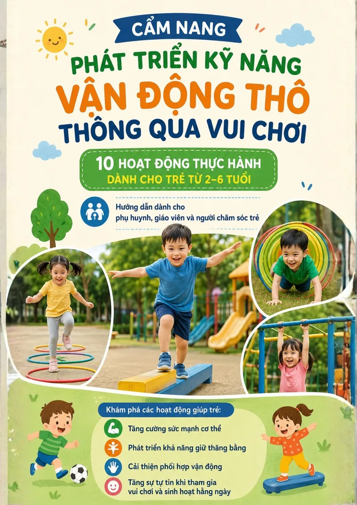
Một lời nhắn gửi chân thành
Một bé gái 4 tuổi. Mẹ thử tập cho con leo cầu thang — con đứng hình, không dám bước. Mẹ thử ném bóng cho con bắt — con lúng túng, không biết đưa tay, chỉ đứng nhìn xung quanh. Mẹ thử xe đạp, leo trèo, kéo chạy — con vẫn ngại hoặc co người sợ sệt.
Hầu hết tài liệu vận động thông thường đều được thiết kế cho trẻ phát triển điển hình. Trẻ tự kỷ và trẻ rối loạn điều hòa giác quan tiếp nhận tín hiệu chuyển động theo một cách rất riêng biệt và cần sự hỗ trợ phù hợp.
Trẻ tự kỷ cần những điều mà các bài tập thể chất thông thường thường bỏ quên:
Con cần nhịp điệu chậm rãi để não bộ kịp định vị cơ thể trong không gian.
Từng bước nhỏ rõ ràng giúp con không bị ngợp và tự tin thực hiện.
Không áp lực thành tích. Mục tiêu là niềm vui và sự tham gia cùng bố mẹ.
Hiểu được điều này, chúng mình đã tổng hợp và biên soạn 10 hoạt động vận động thô thành cẩm nang thực chiến, miễn phí — để mỗi phụ huynh có thể đồng hành cùng con tại nhà mà không cần đoán mò hay chờ đợi chuyên gia.
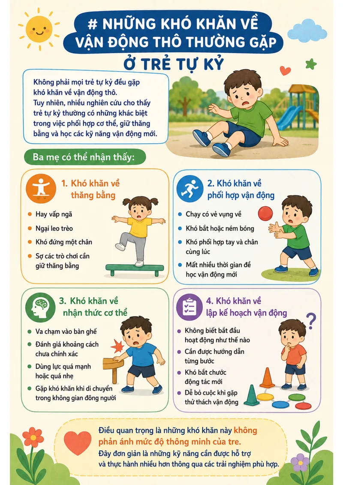
🔍 Chạm xem infographic trang 3Giá trị cốt lõi
Đây không phải là ebook tóm tắt lý thuyết khô khan, mà là bộ hướng dẫn thực hành cầm tay chỉ việc mà bạn có thể mở ra và chơi cùng con ngay hôm nay.
Dành riêng cho các bé hay vấp ngã, chạy vụng về, ngại leo trèo hoặc khó phối hợp tay-chân. Mọi chuyển động đều được tinh chỉnh để giải tỏa áp lực giác quan.
Không làm kiệt sức bố mẹ hay bé. Tận dụng vật dụng sẵn có trong nhà: băng dính giấy, bóng bay, gối ôm, thìa nhựa hoặc thùng carton tái chế.
Mỗi hoạt động đều có 2 phiên bản: đơn giản hơn (khi bé mới bắt đầu, nhạy cảm) và nâng cao hơn (khi bé đã quen) kèm góc quan sát an toàn cho mẹ.
Trọng tâm là niềm vui và sự tham gia kết nối, không phải kết quả vận động chuẩn mực. Mẹ đóng vai là người bạn chơi cùng ấm áp của con.
Mẫu checklist 1 trang thông minh giúp bố mẹ ghi lại trò chơi con yêu thích, thời điểm con vượt qua e ngại và những tiến triển nhỏ đáng tự hào.
Chỉ cần tham gia nhóm Zalo là nhận file PDF 18 trang về máy, không cần thanh toán, không cần đăng ký tài khoản phức tạp.
Đối tượng sử dụng
Chuyển biến tích cực
Không cần áp lực thành tích. Sự tiến bộ của con được ghi nhận qua từng nụ cười và mỗi chuyển động tự tin hơn mỗi ngày.
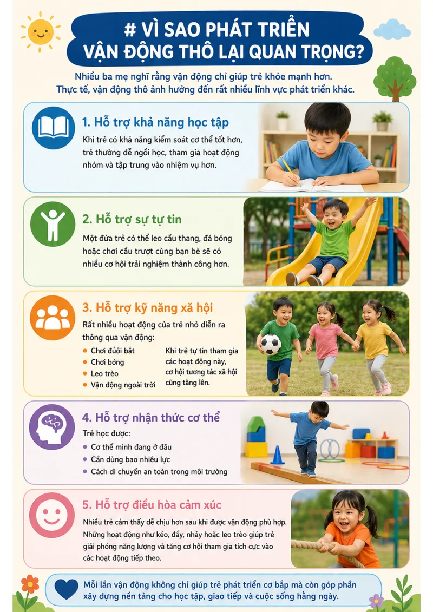
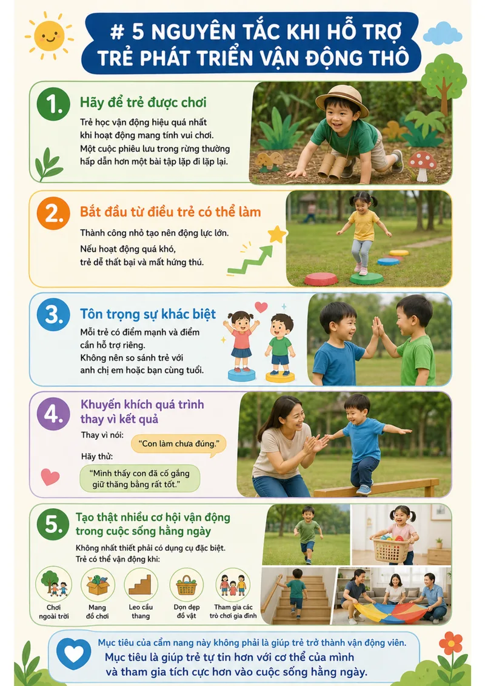
Khám phá nội dung cẩm nang
Mỗi trò chơi đều có hướng dẫn 5 bước, phiên bản đơn giản hơn & nâng cao hơn kèm góc quan sát an toàn cho mẹ.
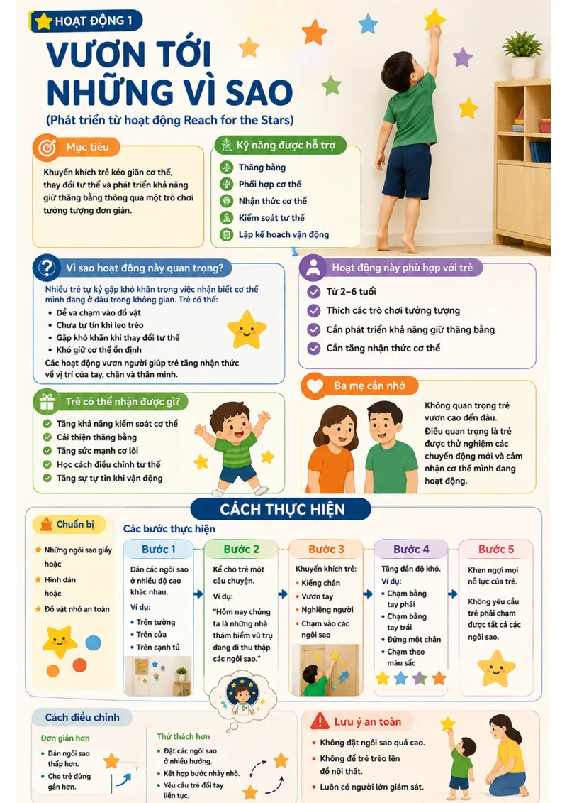
🔍 Xem trang 06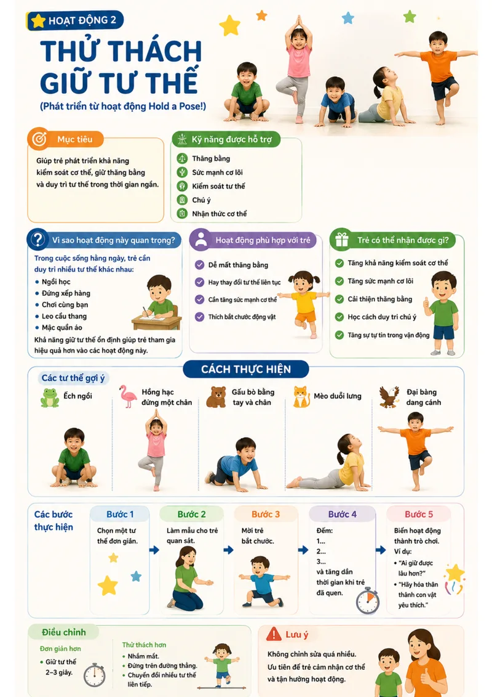
🔍 Xem trang 07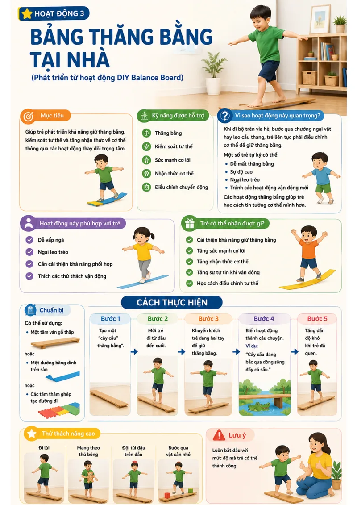
🔍 Xem trang 08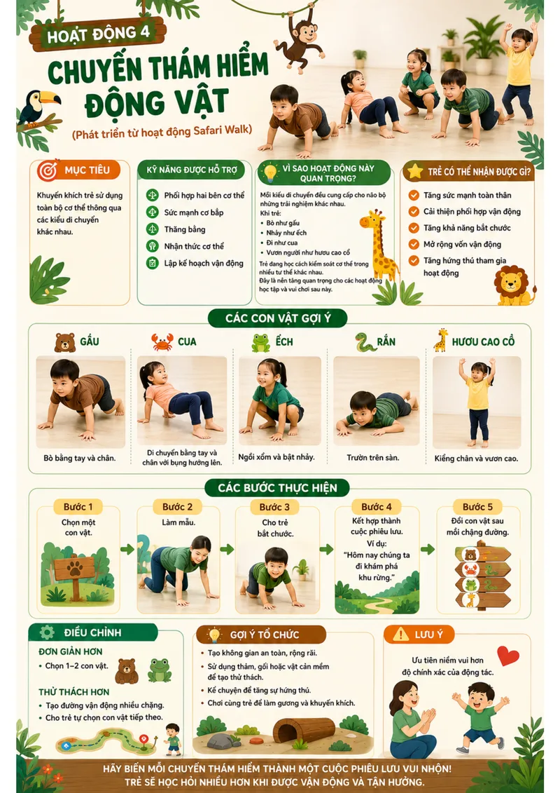
🔍 Xem trang 09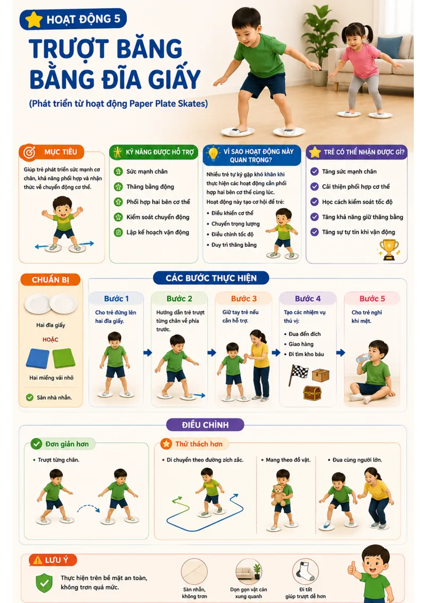
🔍 Xem trang 10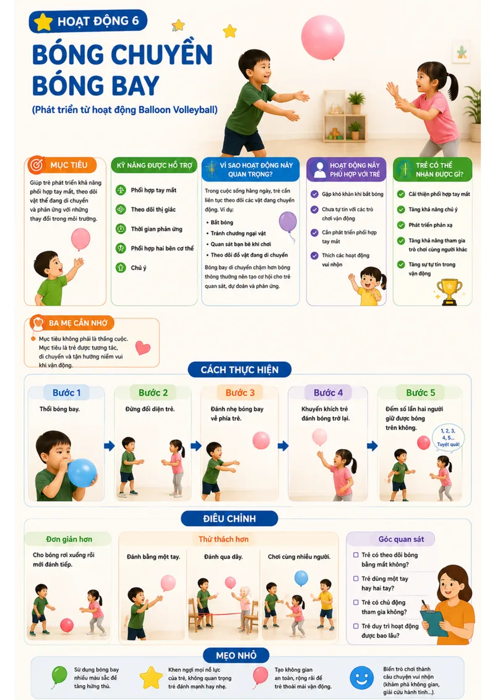
🔍 Xem trang 11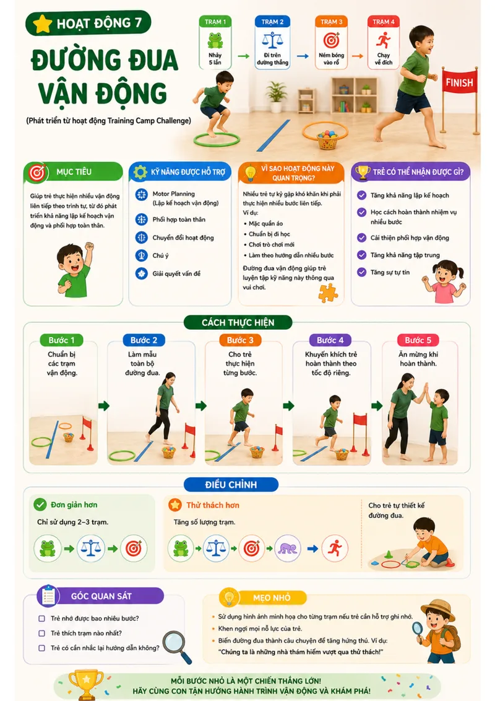
🔍 Xem trang 12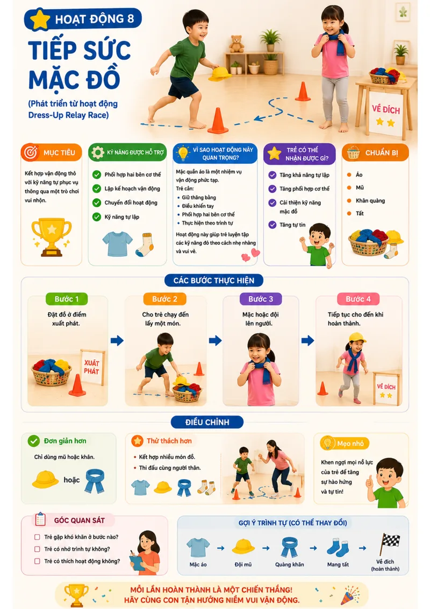
🔍 Xem trang 13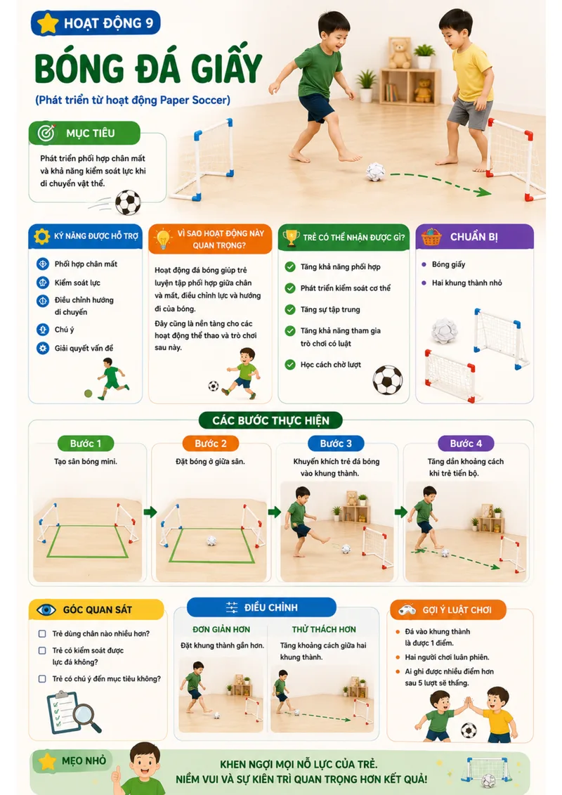
🔍 Xem trang 14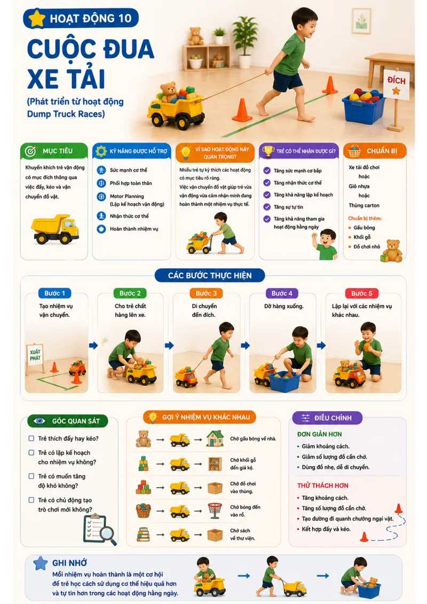
🔍 Xem trang 15Tải trọn bộ 18 trang hướng dẫn chi tiết 10 trò chơi — Miễn phí 100% qua Zalo
Uy tín & Khoa học
Chuyên gia Trị liệu Hoạt động Nhi khoa (Pediatric Occupational Therapist) uy tín tại Hoa Kỳ. Tác giả cuốn sách cẩm nang bán chạy toàn cầu: "Occupational Therapy Activities for Kids: 100 Fun Games and Exercises to Build Skills" (Rockridge Press, 2020) dành cho trẻ từ 6 tuổi trở xuống.
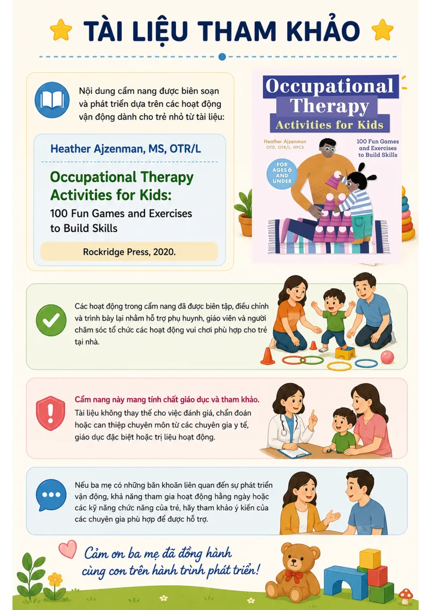
🔍 Chạm xem trang 18 cẩm nangCách thức nhận cẩm nang
Chỉ 3 bước đơn giản — không cần thanh toán, không cần đăng ký tài khoản phức tạp.
Nhấn vào nút bên dưới để mở liên kết nhóm Zalo cộng đồng phụ huynh.
Mở ứng dụng Zalo trên điện thoại hoặc máy tính và nhấn "Tham gia nhóm".
Nhận ngay file PDF 18 trang ghim sẵn trong nhóm — đọc, in và áp dụng ngay.
Nhận trọn bộ cẩm nang PDF 18 trang, đồng thời kết nối cùng hàng trăm phụ huynh khác để trao đổi kinh nghiệm, hỏi đáp cách tương tác khi con e ngại và động viên nhau mỗi ngày.
Tham gia nhóm Zalo nhận tài liệu miễn phíGiải đáp thắc mắc
Hoàn toàn không. Bạn chỉ cần có ứng dụng Zalo để tham gia nhóm và nhận file PDF miễn phí 100%. Không cần đăng ký tài khoản website, không cần cung cấp thẻ hay bất kỳ thông tin thanh toán nào.
Các hoạt động được thiết kế tối ưu cho trẻ 2–6 tuổi. Tuy nhiên, nếu bé lớn hơn vẫn gặp khó khăn trong thăng bằng hoặc phối hợp vận động, bố mẹ hoàn toàn có thể áp dụng các phiên bản nâng cao trong tài liệu.
Hoàn toàn được. Cả 10 trò chơi đều được thiết kế cho không gian phòng khách nhỏ hoặc khoảng trống cạnh giường (chỉ cần 2–3 mét vuông) với các đồ dùng có sẵn trong nhà như gối ôm, bóng bay, băng dính giấy.
Tùy ý bạn. Bạn có thể tải và lưu file PDF 18 trang về máy rồi rời nhóm bất cứ lúc nào mà không gặp bất kỳ sự phiền hà hay ràng buộc nào.
Bắt đầu ngay hôm nay
Chỉ cần 5–10 phút mỗi tối bên con. Tải cẩm nang miễn phí, mở trang đầu tiên và cùng con tạo nên những nụ cười tự tin đầu đời.
Tham gia nhóm Zalo — Nhận cẩm nang miễn phí